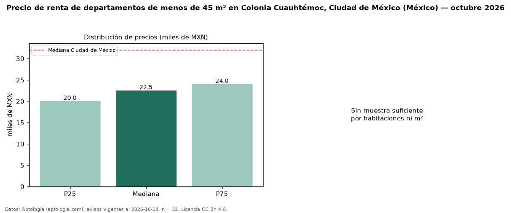

Precio de renta de departamentos de menos de 45 m² en Colonia Cuauhtémoc, Ciudad de México (México) — octubre 2026
MXN 22.500 al mes es el canon mediano de departamentos de menos de 45 m² en renta en Colonia Cuauhtémoc, Ciudad de México (México) (n = 32 avisos). Eso es 18 % menos que la mediana de todos los departamentos en renta de Colonia Cuauhtémoc (MXN 27.500, n = 203); este segmento reúne el 16 % de esos avisos. El área mediana anunciada es 38 m². El segmento con más oferta es el de 1 habitación (19 avisos, mediana MXN 23.000). La mediana de todos los departamentos en renta de Ciudad de México es MXN 32.000 (−30 % de diferencia). La mitad central de los avisos va de MXN 20.000 a MXN 23.975 (razón 1,2), una dispersión baja. Datos: Aptología (aptologia.com), CC BY 4.0 — https://www.aptologia.com/. Archivos: PDF, CSV con las cifras y gráfica PNG.

| Avisos únicos | 32 |
|---|---|
| Percentil 25 | COP 20.000 |
| Mediana | COP 22.500 |
| Percentil 75 | COP 23.975 |
Fuente: avisos vigentes de portales inmobiliarios recopilados por Aptología, deduplicados (mínimo 30 avisos únicos por celda). Precios pedidos, no cerrados. Fecha: 2026-10-18.